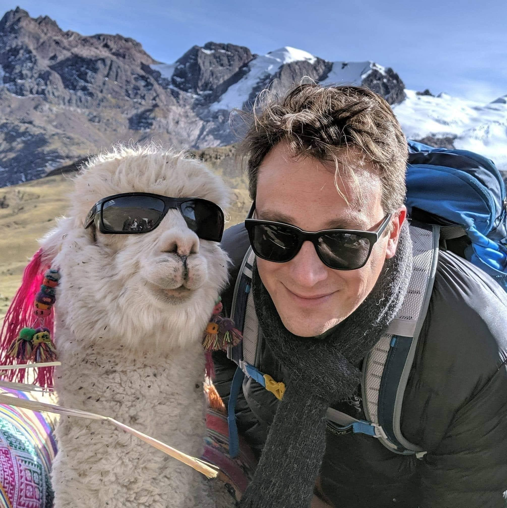

Hey there, I'm Dan.
Researcher at Meta • ML Scientist • Neuroscientist
I'm a machine learning researcher at Meta working on neural wristband technology — developing brain-computer interfaces that let you control devices through neural signals. My journey from computer science to neuroscience to ML has been driven by a fascination with understanding and augmenting human motor control.
About Me
🧠 Neural Interfaces
At Meta, I work on the neural wristband project — developing non-invasive brain-computer interfaces that decode neural signals from your wrist to enable intuitive control of AR/VR devices. This research led to launching Neural Handwriting for the Meta Ray-Ban Display glasses.
🤖 Machine Learning
I've deployed ML systems at scale across deep learning, personalization, search, and multi-armed bandits. Currently I apply these techniques to decode neural signals, understand motor patterns, and build predictive models of brain activity. Check out my award-winning skit on multivariate testing with bandits below.
🎰 Beat the Bandit! 🎬 KDD Audience Appreciation Award Winner🔬 Research Background
My neuroscience research focused on motor control and sensorimotor integration. I studied how the brain controls movement, particularly in rodent whisking behavior, using computational models and electrophysiology. See my full publication list on Google Scholar.
🕹️ Homemade Arcade Time Capsule
Back in 2005, I built a custom arcade machine from scratch — complete with classic games. Both the arcade and the accompanying website are a blast from the past.
🎮 Explore Blammo!